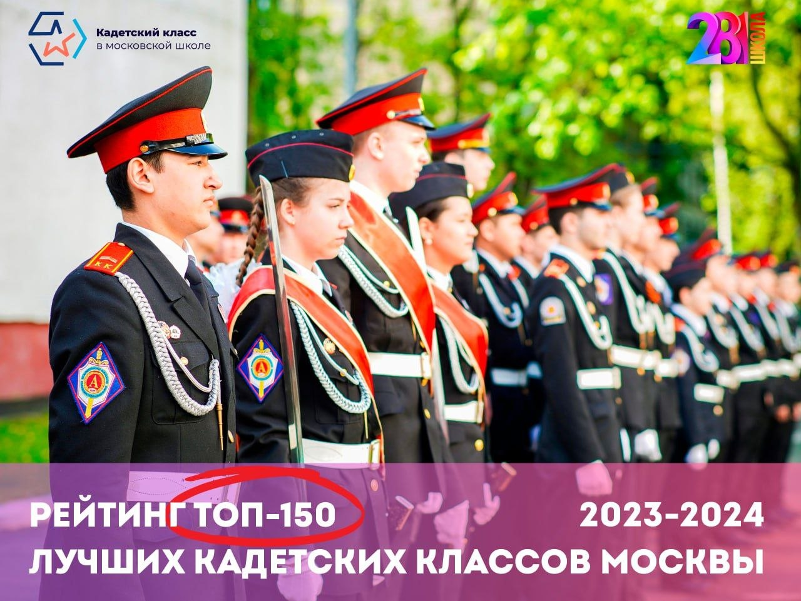
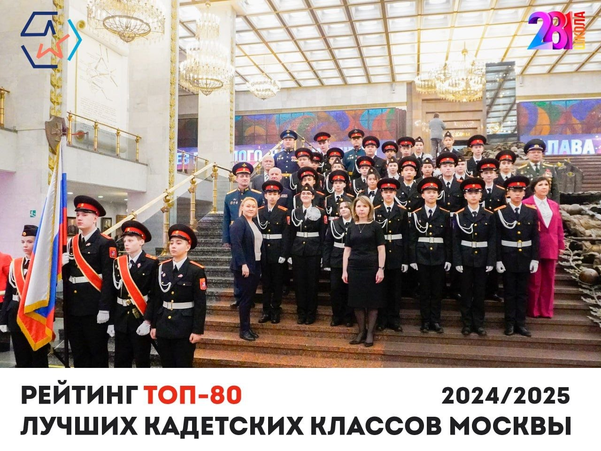
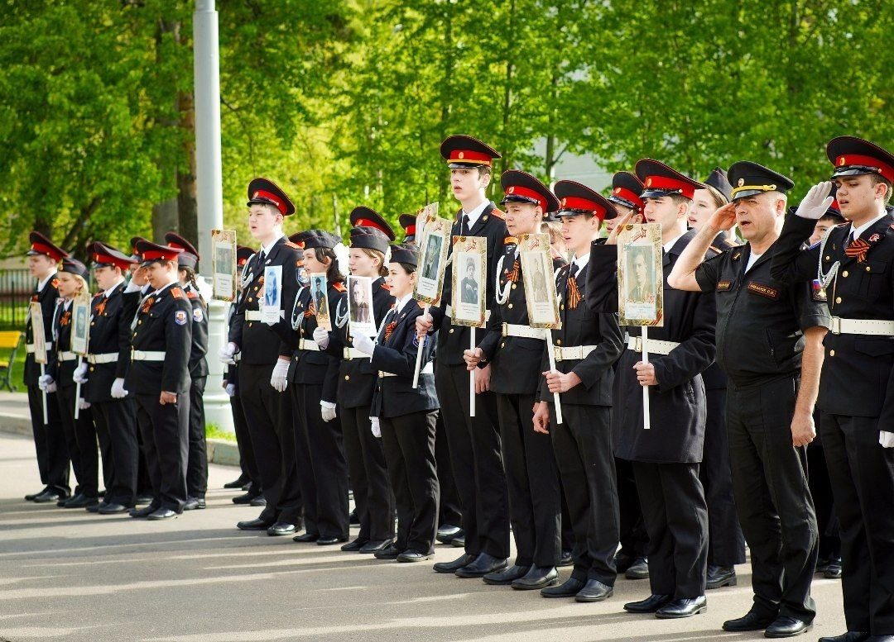
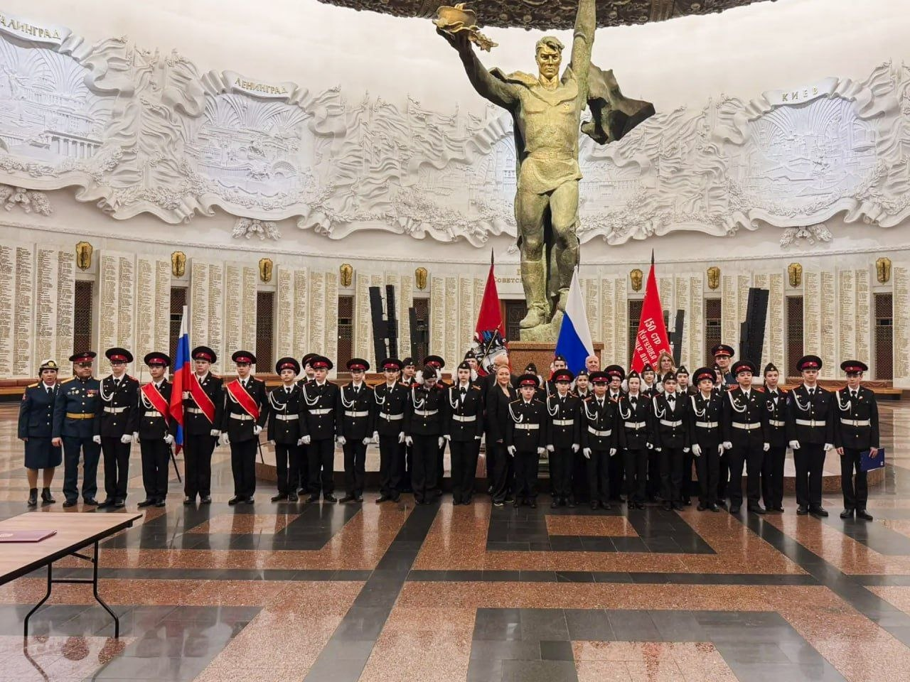
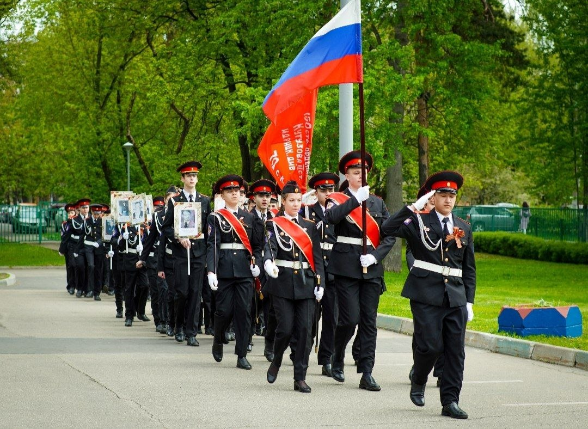
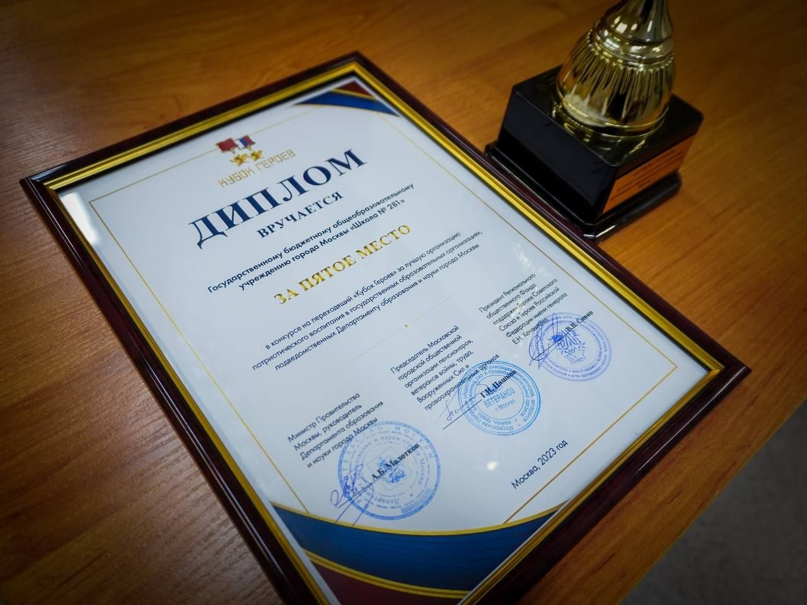
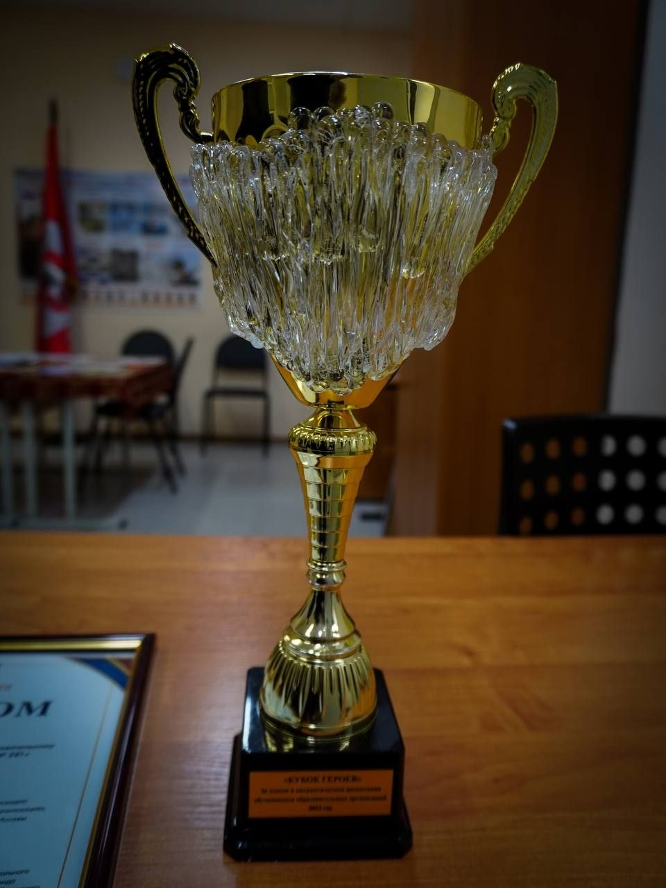
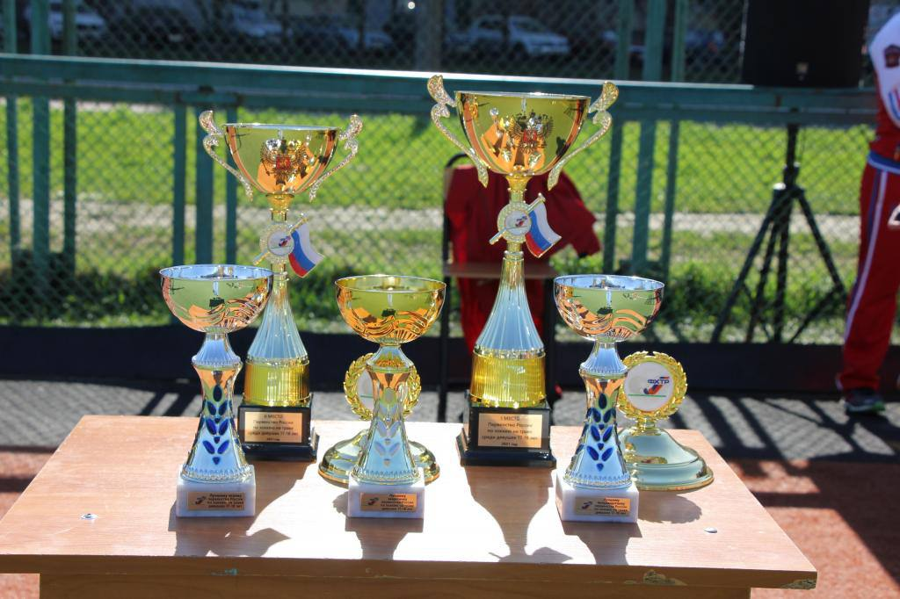

События и достижения
Гордость школы №281
ГБОУ Школа №281 активно развивается, участвует в городских и всероссийских проектах и показывает высокие результаты в обучении и воспитании.
Ключевые достижения
- Школа второй год подряд входит в ТОП-150 лучших кадетских классов Москвы
- В 2024 году вошла в ТОП-80 рейтинга лучших кадетских классов города Москвы
- Успешная реализация проекта «Кадетский класс в московской школе» с 2017 года
- Открытие Военно-патриотического клуба имени майора Сергея Чернышова
- Высокие результаты в ЕГЭ и олимпиадах по математике, естественным наукам и гуманитарным предметам
- Активное участие в творческих фестивалях, конкурсах и спортивных соревнованиях
Важные события
- 2024 год — успешное открытие корпуса на ул. Коминтерна, 4 к1 после капитальной реконструкции по программе «Моя школа»
- Регулярное проведение Дня памяти выпускника школы — майора Сергея Чернышова (офицера подразделения «Альфа»)
- Проведение конкурсов художественного слова «Слова о Победе», посвящённых Великой Отечественной войне
- Участие в фестивалях художественного и научно-технического творчества «Я + мои Друзья»
- Награждение педагогов Почётными грамотами Министерства просвещения РФ
Школа №281 уверенно сочетает качественное образование с военно-патриотическим воспитанием, формируя у учеников чувство долга, дисциплину и любовь к Родине.








← На главную